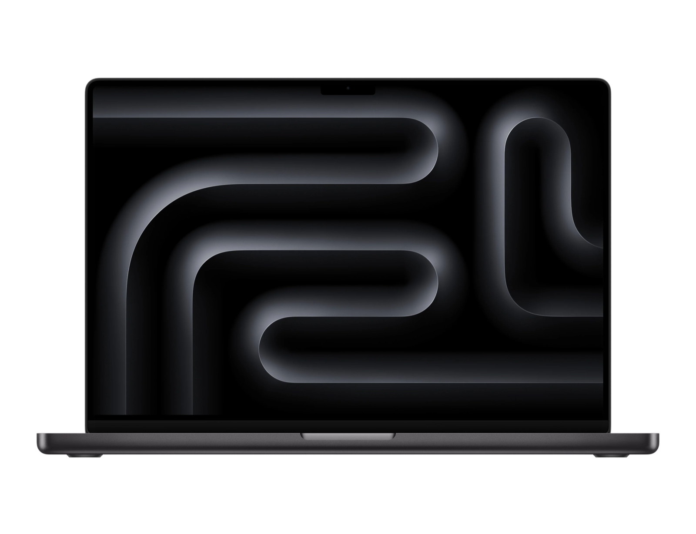

Flow
without distractions
with
You want to work on your computer.
But it's too easy to get distracted.
Multitasking across projects, notifications, social media...

Drawers fixes that.
Separate your work into different spaces.
In each space: everything you need for that project.
Files. Websites. Apps. Chats.
Nothing else.
Move between projects with intention.
Not as a distraction.